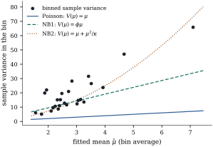

37.4 Negative binomial models
The Poisson model spends its parameters on the mean and none on the variance. Whether that is enough is an empirical question, and the answer is usually no.
37.4.1. Where overdispersion comes from
Call a count model overdispersed
relative to the Poisson if
Let
(a) more generally, for any mixing distribution with
(b) with the gamma mixing distribution above, the marginal mass function of
with
(c) as
Proof.
(a)
(b) The gamma density is
(c) Write
As
Part (a) says the inflation is unavoidable: any unmodelled variation in the mean adds to the variance, whatever its shape. The gamma is chosen in (b) for its closed form, not because heterogeneity is really gamma distributed; the log-normal gives no closed form, and is the natural choice once random effects enter the picture (Chapter 40).
Let
(a) The NB2 model takes
The variance is quadratic in the mean, and the coefficient of variation of
(b) The NB1 model takes
The variance is linear in the mean, with a constant inflation factor.
The parameter
These are genuinely different models, not reparameterizations of one: NB2 says units differ multiplicatively by a fixed relative amount, NB1 that the excess variance is a fixed multiple of the mean.
37.4.2. Estimation and inference
In the NB2 model of Definition 37.4.1 with
(a) for fixed
(b) with the log link, the score for
so that Fisher scoring is iteratively reweighted least squares with weights
(c)
(d) the score for
(e) the Poisson model is the boundary case
(f) in the NB1 model of Definition 37.4.1(b), with
The residual
Proof.
(a) Take logarithms in Eq. 37.4.1:
(b) By Theorem 34.3.1 the score is
(c) Differentiating Eq. 37.4.5, written as
(d) Differentiate the logarithm of Eq. 37.4.1 in
(e) With
(f) By Lemma 37.4.1(c) the Poisson is the limit
Part (c) makes the alternating algorithm honest as
well as convenient: iterate the weighted least squares
step of (b) at the current
37.4.3. A score test for overdispersion
The likelihood ratio test in Proposition 37.4.2(e) needs the negative binomial fit. A score test needs only the Poisson fit, which makes it the natural diagnostic to compute alongside any Poisson regression.
Let
its variance under the Poisson model is
Then
is asymptotically standard normal under the Poisson
model, and the test rejects for large positive
Proof. Take logarithms in Eq. 37.4.2:
The leading term is the Poisson log-likelihood and
the coefficient of
For the variance, put
For the covariance, differentiate Eq. 37.4.7 in
The statistic is one-sided by construction: a count
less variable than the Poisson is possible but
not negative binomial, so a large negative
37.4.4. The physician visits again
Refit the model of Example (Physician visits in a health insurance experiment)
with the NB2 distribution, alternating the weighted
least squares step of Proposition 37.4.2(b) with
a one-dimensional solve for
What changes is inference. For the
individual-deductible indicator the point estimate moves
only from
Fitting NB1 instead gives log-likelihood

import numpy as np
import statsmodels.api as sm
from scipy import optimize, special, stats
data = sm.datasets.randhie.load_pandas().data
y = data["mdvis"].to_numpy(float)
names = ["intercept", "lncoins", "idp", "physlm", "disea", "hlthg", "hlthf", "hlthp"]
X = np.column_stack([np.ones(len(y))] + [data[v].to_numpy(float) for v in names[1:]])
n, p = X.shape
beta_pois = np.zeros(p)
beta_pois[0] = np.log(y.mean())
for _ in range(50):
mu = np.exp(X @ beta_pois)
XW = X * mu[:, None]
beta_pois = np.linalg.solve(X.T @ XW, XW.T @ (X @ beta_pois + (y - mu) / mu))
mu_pois = np.exp(X @ beta_pois)
info_pois = X.T @ (X * mu_pois[:, None])
se_pois = np.sqrt(np.diag(np.linalg.inv(info_pois)))
log_factorial = special.gammaln(y + 1)
loglik_pois = np.sum(y * np.log(mu_pois) - mu_pois - log_factorial)
print(f"Poisson log-likelihood {loglik_pois:.2f}")def nb_loglik(beta, kappa, X, y):
"""Negative binomial log-likelihood: mean exp(X beta), shape kappa (NB2 if scalar)."""
mu = np.exp(X @ beta)
return np.sum(special.gammaln(y + kappa) - special.gammaln(kappa)
- special.gammaln(y + 1)
+ kappa * np.log(kappa / (kappa + mu))
+ y * np.log(mu / (mu + kappa)))
def kappa_score(kappa, mu, y):
"""Derivative of the log-likelihood in the shape parameter."""
return np.sum(special.digamma(y + kappa) - special.digamma(kappa)
+ np.log(kappa / (kappa + mu)) + 1 - (kappa + y) / (kappa + mu))
def fit_nb2(X, y, tol=1e-11, maxit=200):
"""Alternate IRLS in beta with a one-dimensional search in kappa."""
beta = np.zeros(X.shape[1])
beta[0] = np.log(y.mean())
kappa = 1.0
for _ in range(maxit):
mu = np.exp(X @ beta)
w = mu / (1 + mu / kappa) # NB2 working weights, log link
XW = X * w[:, None]
step = np.linalg.solve(X.T @ XW, XW.T @ (X @ beta + (y - mu) / mu))
new_kappa = optimize.brentq(kappa_score, 1e-4, 1e4,
args=(np.exp(X @ step), y), xtol=1e-12)
done = max(np.abs(step - beta).max(), abs(new_kappa - kappa)) < tol
beta, kappa = step, new_kappa
if done:
break
return beta, kappa, nb_loglik(beta, kappa, X, y)
beta_nb2, kappa, loglik_nb2 = fit_nb2(X, y)
mu_nb2 = np.exp(X @ beta_nb2)
weights = mu_nb2 / (1 + mu_nb2 / kappa) # IRLS weights for NB2 with a log link
se_nb2 = np.sqrt(np.diag(np.linalg.inv(X.T @ (X * weights[:, None]))))
print(f"kappa = {kappa:.4f} log-likelihood {loglik_nb2:.2f}")
for name, b, s, sp in zip(names, beta_nb2, se_nb2, se_pois):
print(f"{name:10s} {b:8.4f} se {s:.4f} (Poisson se {sp:.4f})")lr = 2 * (loglik_nb2 - loglik_pois)
# the null puts 1/kappa on the boundary, so the null distribution of L is the mixture
# (1/2) chi2(0) + (1/2) chi2(1) and the p-value is the normal tail at sqrt(L)
log_p = stats.norm.logsf(np.sqrt(lr))
score = np.sum((y - mu_pois) ** 2 - y) / np.sqrt(2 * np.sum(mu_pois ** 2))
print(f"likelihood ratio {lr:.1f}, log p-value {log_p:.0f}")
print(f"score statistic {score:.1f}, log p-value {stats.norm.logsf(score):.0f}")37.4.5. Exercises
A. Check your understanding
A negative binomial NB2 fit reports
A colleague reports a likelihood ratio statistic of
B. Practice
For an intercept-only Poisson model,
Solution. With
Show that if
Solution. Setting
Show that the quasi-Poisson estimating equation for
Show that the deviance (Definition 34.5.1)
of the NB2 model with
Solution. Dropping the terms free
of
C. Going deeper
Construct a count distribution with mean
Solution. The binomial with
Proposition 37.4.2(a)
identifies the canonical link of the NB2 family as